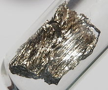

Samarium
|  | |||||||||||||||||||||||||||||||||||||||||||||||||||||||||||||||||||||||||||||||||||||||||||||||||||||||||||||||||||||||||||||||||||||||||||||||||||||||||||||||||||||||||||||||||||||||||||||||||||||||||||||||||||||||||||||||||||||
| General properties | |||||||||||||||||||||||||||||||||||||||||||||||||||||||||||||||||||||||||||||||||||||||||||||||||||||||||||||||||||||||||||||||||||||||||||||||||||||||||||||||||||||||||||||||||||||||||||||||||||||||||||||||||||||||||||||||||||||
|---|---|---|---|---|---|---|---|---|---|---|---|---|---|---|---|---|---|---|---|---|---|---|---|---|---|---|---|---|---|---|---|---|---|---|---|---|---|---|---|---|---|---|---|---|---|---|---|---|---|---|---|---|---|---|---|---|---|---|---|---|---|---|---|---|---|---|---|---|---|---|---|---|---|---|---|---|---|---|---|---|---|---|---|---|---|---|---|---|---|---|---|---|---|---|---|---|---|---|---|---|---|---|---|---|---|---|---|---|---|---|---|---|---|---|---|---|---|---|---|---|---|---|---|---|---|---|---|---|---|---|---|---|---|---|---|---|---|---|---|---|---|---|---|---|---|---|---|---|---|---|---|---|---|---|---|---|---|---|---|---|---|---|---|---|---|---|---|---|---|---|---|---|---|---|---|---|---|---|---|---|---|---|---|---|---|---|---|---|---|---|---|---|---|---|---|---|---|---|---|---|---|---|---|---|---|---|---|---|---|---|---|---|---|---|---|---|---|---|---|---|---|---|---|---|---|---|---|---|---|
| Name, symbol | samarium, Sm | ||||||||||||||||||||||||||||||||||||||||||||||||||||||||||||||||||||||||||||||||||||||||||||||||||||||||||||||||||||||||||||||||||||||||||||||||||||||||||||||||||||||||||||||||||||||||||||||||||||||||||||||||||||||||||||||||||||
| Pronunciation | /səˈmɛəriəm/ sə-MAIR-ee-əm |
||||||||||||||||||||||||||||||||||||||||||||||||||||||||||||||||||||||||||||||||||||||||||||||||||||||||||||||||||||||||||||||||||||||||||||||||||||||||||||||||||||||||||||||||||||||||||||||||||||||||||||||||||||||||||||||||||||
| Allotropes | α form | ||||||||||||||||||||||||||||||||||||||||||||||||||||||||||||||||||||||||||||||||||||||||||||||||||||||||||||||||||||||||||||||||||||||||||||||||||||||||||||||||||||||||||||||||||||||||||||||||||||||||||||||||||||||||||||||||||||
| Appearance | silvery white | ||||||||||||||||||||||||||||||||||||||||||||||||||||||||||||||||||||||||||||||||||||||||||||||||||||||||||||||||||||||||||||||||||||||||||||||||||||||||||||||||||||||||||||||||||||||||||||||||||||||||||||||||||||||||||||||||||||
| Samarium in the periodic table | |||||||||||||||||||||||||||||||||||||||||||||||||||||||||||||||||||||||||||||||||||||||||||||||||||||||||||||||||||||||||||||||||||||||||||||||||||||||||||||||||||||||||||||||||||||||||||||||||||||||||||||||||||||||||||||||||||||
|
|||||||||||||||||||||||||||||||||||||||||||||||||||||||||||||||||||||||||||||||||||||||||||||||||||||||||||||||||||||||||||||||||||||||||||||||||||||||||||||||||||||||||||||||||||||||||||||||||||||||||||||||||||||||||||||||||||||
| Atomic number | 62 | ||||||||||||||||||||||||||||||||||||||||||||||||||||||||||||||||||||||||||||||||||||||||||||||||||||||||||||||||||||||||||||||||||||||||||||||||||||||||||||||||||||||||||||||||||||||||||||||||||||||||||||||||||||||||||||||||||||
| Standard atomic weight (±) | 150.36(2)[1] | ||||||||||||||||||||||||||||||||||||||||||||||||||||||||||||||||||||||||||||||||||||||||||||||||||||||||||||||||||||||||||||||||||||||||||||||||||||||||||||||||||||||||||||||||||||||||||||||||||||||||||||||||||||||||||||||||||||
| Element category | lanthanide | ||||||||||||||||||||||||||||||||||||||||||||||||||||||||||||||||||||||||||||||||||||||||||||||||||||||||||||||||||||||||||||||||||||||||||||||||||||||||||||||||||||||||||||||||||||||||||||||||||||||||||||||||||||||||||||||||||||
| Group, block | group n/a, f-block | ||||||||||||||||||||||||||||||||||||||||||||||||||||||||||||||||||||||||||||||||||||||||||||||||||||||||||||||||||||||||||||||||||||||||||||||||||||||||||||||||||||||||||||||||||||||||||||||||||||||||||||||||||||||||||||||||||||
| Period | period 6 | ||||||||||||||||||||||||||||||||||||||||||||||||||||||||||||||||||||||||||||||||||||||||||||||||||||||||||||||||||||||||||||||||||||||||||||||||||||||||||||||||||||||||||||||||||||||||||||||||||||||||||||||||||||||||||||||||||||
| Electron configuration | [Xe] 4f6 6s2 | ||||||||||||||||||||||||||||||||||||||||||||||||||||||||||||||||||||||||||||||||||||||||||||||||||||||||||||||||||||||||||||||||||||||||||||||||||||||||||||||||||||||||||||||||||||||||||||||||||||||||||||||||||||||||||||||||||||
| per shell | 2, 8, 18, 24, 8, 2 | ||||||||||||||||||||||||||||||||||||||||||||||||||||||||||||||||||||||||||||||||||||||||||||||||||||||||||||||||||||||||||||||||||||||||||||||||||||||||||||||||||||||||||||||||||||||||||||||||||||||||||||||||||||||||||||||||||||
| Physical properties | |||||||||||||||||||||||||||||||||||||||||||||||||||||||||||||||||||||||||||||||||||||||||||||||||||||||||||||||||||||||||||||||||||||||||||||||||||||||||||||||||||||||||||||||||||||||||||||||||||||||||||||||||||||||||||||||||||||
| Phase | solid | ||||||||||||||||||||||||||||||||||||||||||||||||||||||||||||||||||||||||||||||||||||||||||||||||||||||||||||||||||||||||||||||||||||||||||||||||||||||||||||||||||||||||||||||||||||||||||||||||||||||||||||||||||||||||||||||||||||
| Melting point | 1345 K (1072 °C, 1962 °F) | ||||||||||||||||||||||||||||||||||||||||||||||||||||||||||||||||||||||||||||||||||||||||||||||||||||||||||||||||||||||||||||||||||||||||||||||||||||||||||||||||||||||||||||||||||||||||||||||||||||||||||||||||||||||||||||||||||||
| Boiling point | 2173 K (1900 °C, 3452 °F) | ||||||||||||||||||||||||||||||||||||||||||||||||||||||||||||||||||||||||||||||||||||||||||||||||||||||||||||||||||||||||||||||||||||||||||||||||||||||||||||||||||||||||||||||||||||||||||||||||||||||||||||||||||||||||||||||||||||
| Density near r.t. | 7.52 g·cm−3 | ||||||||||||||||||||||||||||||||||||||||||||||||||||||||||||||||||||||||||||||||||||||||||||||||||||||||||||||||||||||||||||||||||||||||||||||||||||||||||||||||||||||||||||||||||||||||||||||||||||||||||||||||||||||||||||||||||||
| when liquid, at m.p. | 7.16 g·cm−3 | ||||||||||||||||||||||||||||||||||||||||||||||||||||||||||||||||||||||||||||||||||||||||||||||||||||||||||||||||||||||||||||||||||||||||||||||||||||||||||||||||||||||||||||||||||||||||||||||||||||||||||||||||||||||||||||||||||||
| Heat of fusion | 8.62 kJ·mol−1 | ||||||||||||||||||||||||||||||||||||||||||||||||||||||||||||||||||||||||||||||||||||||||||||||||||||||||||||||||||||||||||||||||||||||||||||||||||||||||||||||||||||||||||||||||||||||||||||||||||||||||||||||||||||||||||||||||||||
| Heat of vaporization | 192 kJ·mol−1 | ||||||||||||||||||||||||||||||||||||||||||||||||||||||||||||||||||||||||||||||||||||||||||||||||||||||||||||||||||||||||||||||||||||||||||||||||||||||||||||||||||||||||||||||||||||||||||||||||||||||||||||||||||||||||||||||||||||
| Molar heat capacity | 29.54 J·mol−1·K−1 | ||||||||||||||||||||||||||||||||||||||||||||||||||||||||||||||||||||||||||||||||||||||||||||||||||||||||||||||||||||||||||||||||||||||||||||||||||||||||||||||||||||||||||||||||||||||||||||||||||||||||||||||||||||||||||||||||||||
vapor pressure
|
|||||||||||||||||||||||||||||||||||||||||||||||||||||||||||||||||||||||||||||||||||||||||||||||||||||||||||||||||||||||||||||||||||||||||||||||||||||||||||||||||||||||||||||||||||||||||||||||||||||||||||||||||||||||||||||||||||||
| Atomic properties | |||||||||||||||||||||||||||||||||||||||||||||||||||||||||||||||||||||||||||||||||||||||||||||||||||||||||||||||||||||||||||||||||||||||||||||||||||||||||||||||||||||||||||||||||||||||||||||||||||||||||||||||||||||||||||||||||||||
| Oxidation states | 4, 3, 2, 1 (a mildly basic oxide) | ||||||||||||||||||||||||||||||||||||||||||||||||||||||||||||||||||||||||||||||||||||||||||||||||||||||||||||||||||||||||||||||||||||||||||||||||||||||||||||||||||||||||||||||||||||||||||||||||||||||||||||||||||||||||||||||||||||
| Electronegativity | Pauling scale: 1.17 | ||||||||||||||||||||||||||||||||||||||||||||||||||||||||||||||||||||||||||||||||||||||||||||||||||||||||||||||||||||||||||||||||||||||||||||||||||||||||||||||||||||||||||||||||||||||||||||||||||||||||||||||||||||||||||||||||||||
| Ionization energies | 1st: 544.5 kJ·mol−1 2nd: 1070 kJ·mol−1 3rd: 2260 kJ·mol−1 |
||||||||||||||||||||||||||||||||||||||||||||||||||||||||||||||||||||||||||||||||||||||||||||||||||||||||||||||||||||||||||||||||||||||||||||||||||||||||||||||||||||||||||||||||||||||||||||||||||||||||||||||||||||||||||||||||||||
| Atomic radius | empirical: 180 pm | ||||||||||||||||||||||||||||||||||||||||||||||||||||||||||||||||||||||||||||||||||||||||||||||||||||||||||||||||||||||||||||||||||||||||||||||||||||||||||||||||||||||||||||||||||||||||||||||||||||||||||||||||||||||||||||||||||||
| Covalent radius | 198±8 pm | ||||||||||||||||||||||||||||||||||||||||||||||||||||||||||||||||||||||||||||||||||||||||||||||||||||||||||||||||||||||||||||||||||||||||||||||||||||||||||||||||||||||||||||||||||||||||||||||||||||||||||||||||||||||||||||||||||||
| Miscellanea | |||||||||||||||||||||||||||||||||||||||||||||||||||||||||||||||||||||||||||||||||||||||||||||||||||||||||||||||||||||||||||||||||||||||||||||||||||||||||||||||||||||||||||||||||||||||||||||||||||||||||||||||||||||||||||||||||||||
| Crystal structure | rhombohedral
 |
||||||||||||||||||||||||||||||||||||||||||||||||||||||||||||||||||||||||||||||||||||||||||||||||||||||||||||||||||||||||||||||||||||||||||||||||||||||||||||||||||||||||||||||||||||||||||||||||||||||||||||||||||||||||||||||||||||
| Speed of sound thin rod | 2130 m·s−1 (at 20 °C) | ||||||||||||||||||||||||||||||||||||||||||||||||||||||||||||||||||||||||||||||||||||||||||||||||||||||||||||||||||||||||||||||||||||||||||||||||||||||||||||||||||||||||||||||||||||||||||||||||||||||||||||||||||||||||||||||||||||
| Thermal expansion | (r.t.) (α, poly) 12.7 µm·m−1·K−1 | ||||||||||||||||||||||||||||||||||||||||||||||||||||||||||||||||||||||||||||||||||||||||||||||||||||||||||||||||||||||||||||||||||||||||||||||||||||||||||||||||||||||||||||||||||||||||||||||||||||||||||||||||||||||||||||||||||||
| Thermal conductivity | 13.3 W·m−1·K−1 | ||||||||||||||||||||||||||||||||||||||||||||||||||||||||||||||||||||||||||||||||||||||||||||||||||||||||||||||||||||||||||||||||||||||||||||||||||||||||||||||||||||||||||||||||||||||||||||||||||||||||||||||||||||||||||||||||||||
| Electrical resistivity | (r.t.) (α, poly) 0.940 µΩ·m | ||||||||||||||||||||||||||||||||||||||||||||||||||||||||||||||||||||||||||||||||||||||||||||||||||||||||||||||||||||||||||||||||||||||||||||||||||||||||||||||||||||||||||||||||||||||||||||||||||||||||||||||||||||||||||||||||||||
| Magnetic ordering | paramagnetic[2] | ||||||||||||||||||||||||||||||||||||||||||||||||||||||||||||||||||||||||||||||||||||||||||||||||||||||||||||||||||||||||||||||||||||||||||||||||||||||||||||||||||||||||||||||||||||||||||||||||||||||||||||||||||||||||||||||||||||
| Young's modulus | α form: 49.7 GPa | ||||||||||||||||||||||||||||||||||||||||||||||||||||||||||||||||||||||||||||||||||||||||||||||||||||||||||||||||||||||||||||||||||||||||||||||||||||||||||||||||||||||||||||||||||||||||||||||||||||||||||||||||||||||||||||||||||||
| Shear modulus | α form: 19.5 GPa | ||||||||||||||||||||||||||||||||||||||||||||||||||||||||||||||||||||||||||||||||||||||||||||||||||||||||||||||||||||||||||||||||||||||||||||||||||||||||||||||||||||||||||||||||||||||||||||||||||||||||||||||||||||||||||||||||||||
| Bulk modulus | α form: 37.8 GPa | ||||||||||||||||||||||||||||||||||||||||||||||||||||||||||||||||||||||||||||||||||||||||||||||||||||||||||||||||||||||||||||||||||||||||||||||||||||||||||||||||||||||||||||||||||||||||||||||||||||||||||||||||||||||||||||||||||||
| Poisson ratio | α form: 0.274 | ||||||||||||||||||||||||||||||||||||||||||||||||||||||||||||||||||||||||||||||||||||||||||||||||||||||||||||||||||||||||||||||||||||||||||||||||||||||||||||||||||||||||||||||||||||||||||||||||||||||||||||||||||||||||||||||||||||
| Vickers hardness | 410–440 MPa | ||||||||||||||||||||||||||||||||||||||||||||||||||||||||||||||||||||||||||||||||||||||||||||||||||||||||||||||||||||||||||||||||||||||||||||||||||||||||||||||||||||||||||||||||||||||||||||||||||||||||||||||||||||||||||||||||||||
| Brinell hardness | 440–600 MPa | ||||||||||||||||||||||||||||||||||||||||||||||||||||||||||||||||||||||||||||||||||||||||||||||||||||||||||||||||||||||||||||||||||||||||||||||||||||||||||||||||||||||||||||||||||||||||||||||||||||||||||||||||||||||||||||||||||||
| CAS Registry Number | 7440-19-9 | ||||||||||||||||||||||||||||||||||||||||||||||||||||||||||||||||||||||||||||||||||||||||||||||||||||||||||||||||||||||||||||||||||||||||||||||||||||||||||||||||||||||||||||||||||||||||||||||||||||||||||||||||||||||||||||||||||||
| History | |||||||||||||||||||||||||||||||||||||||||||||||||||||||||||||||||||||||||||||||||||||||||||||||||||||||||||||||||||||||||||||||||||||||||||||||||||||||||||||||||||||||||||||||||||||||||||||||||||||||||||||||||||||||||||||||||||||
| Naming | after the mineral samarskite (itself named after Vasili Samarsky-Bykhovets) | ||||||||||||||||||||||||||||||||||||||||||||||||||||||||||||||||||||||||||||||||||||||||||||||||||||||||||||||||||||||||||||||||||||||||||||||||||||||||||||||||||||||||||||||||||||||||||||||||||||||||||||||||||||||||||||||||||||
| Discovery and first isolation | Lecoq de Boisbaudran (1879) | ||||||||||||||||||||||||||||||||||||||||||||||||||||||||||||||||||||||||||||||||||||||||||||||||||||||||||||||||||||||||||||||||||||||||||||||||||||||||||||||||||||||||||||||||||||||||||||||||||||||||||||||||||||||||||||||||||||
| Most stable isotopes | |||||||||||||||||||||||||||||||||||||||||||||||||||||||||||||||||||||||||||||||||||||||||||||||||||||||||||||||||||||||||||||||||||||||||||||||||||||||||||||||||||||||||||||||||||||||||||||||||||||||||||||||||||||||||||||||||||||
|
|||||||||||||||||||||||||||||||||||||||||||||||||||||||||||||||||||||||||||||||||||||||||||||||||||||||||||||||||||||||||||||||||||||||||||||||||||||||||||||||||||||||||||||||||||||||||||||||||||||||||||||||||||||||||||||||||||||
| Decay modes in parentheses are predicted, but have not yet been observed | |||||||||||||||||||||||||||||||||||||||||||||||||||||||||||||||||||||||||||||||||||||||||||||||||||||||||||||||||||||||||||||||||||||||||||||||||||||||||||||||||||||||||||||||||||||||||||||||||||||||||||||||||||||||||||||||||||||
{kind=link}
Samarium is a chemical element with symbol Sm and atomic number 62. It is a moderately hard silvery metal that readily oxidizes in air. Being a typical member of the lanthanide series, samarium usually assumes the oxidation state +3. Compounds of samarium(II) are also known, most notably the monoxide SmO, monochalcogenides SmS, SmSe and SmTe, as well as samarium(II) iodide. The last compound is a common reducing agent in chemical synthesis. Samarium has no significant biological role and is only slightly toxic.
Samarium was discovered in 1879 by the French chemist Paul Émile Lecoq de Boisbaudran and named after the mineral samarskite from which it was isolated. The mineral itself was earlier named after a Russian mine official, Colonel Vasili Samarsky-Bykhovets, who thereby became the first person to have a chemical element named after him, albeit indirectly. Although classified as a rare earth element, samarium is the 40th most abundant element in the Earth's crust and is more common than such metals as tin. Samarium occurs with concentration up to 2.8% in several minerals including cerite, gadolinite, samarskite, monazite and bastnäsite, the last two being the most common commercial sources of the element. These minerals are mostly found in China, the United States, Brazil, India, Sri Lanka and Australia; China is by far the world leader in samarium mining and production.
The major commercial application of samarium is in samarium-cobalt magnets, which have permanent magnetization second only to neodymium magnets; however, samarium compounds can withstand significantly higher temperatures, above 700 °C (1292 °F), without losing their magnetic properties due to the alloy's higher Curie point. The radioactive isotope samarium-153 is the major component of the drug samarium (153Sm) lexidronam (Quadramet), which kills cancer cells in the treatment of lung cancer, prostate cancer, breast cancer and osteosarcoma. Another isotope, samarium-149, is a strong neutron absorber and is therefore added to the control rods of nuclear reactors. It is also formed as a decay product during the reactor operation and is one of the important factors considered in the reactor design and operation. Other applications of samarium include catalysis of chemical reactions, radioactive dating and an X-ray laser.
Contents
[hide]Physical properties[edit]
Samarium is a rare earth metal having the hardness and density similar to those of zinc. With the boiling point of 1794 °C, samarium is the third most volatile lanthanide after ytterbium and europium; this property facilitates separation of samarium from the mineral ore. At ambient conditions, samarium normally assumes a rhombohedral structure (α form). Upon heating to 731 °C, its crystal symmetry changes into hexagonally close-packed (hcp), however the transition temperature depends on the metal purity. Further heating to 922 °C transforms the metal into a body-centered cubic (bcc) phase. Heating to 300 °C combined with compression to 40 kbar results in a double-hexagonally close-packed structure (dhcp). Applying higher pressure of the order of hundreds or thousands of kilobars induces a series of phase transformations, in particular with a tetragonal phase appearing at about 900 kbar.[3] In one study, the dhcp phase could be produced without compression, using a nonequilibrium annealing regime with a rapid temperature change between about 400 and 700 °C, confirming the transient character of this samarium phase. Also, thin films of samarium obtained by vapor deposition may contain the hcp or dhcp phases at ambient conditions.[3]
Samarium (and its sesquioxide) are paramagnetic at room temperature. Their corresponding effective magnetic moments, below 2µB, are the 3rd lowest among the lanthanides (and their oxides) after lanthanum and lutetium. The metal transforms to an antiferromagnetic state upon cooling to 14.8 K.[4][5] Individual samarium atoms can be isolated by encapsulating them into fullerene molecules.[6] They can also be doped between the C60 molecules in the fullerene solid, rendering it superconductive at temperatures below 8 K.[7] Samarium doping of iron-based superconductors – the most recent class of high-temperature superconductors – allows to enhance their transition temperature to 56 K, which is the highest value achieved so far in this series.[8]
Chemical properties[edit]
Freshly prepared samarium has a silvery luster. In air, it slowly oxidizes at room temperature and spontaneously ignites at 150 °C.[9][10] Even when stored under mineral oil, samarium gradually oxidizes and develops a grayish-yellow powder of the oxide-hydroxide mixture at the surface. The metallic appearance of a sample can be preserved by sealing it under an inert gas such as argon.
Samarium is quite electropositive and reacts slowly with cold water and quite quickly with hot water to form samarium hydroxide:[11]
- 2 Sm (s) + 6 H2O (l) → 2 Sm(OH)3 (aq) + 3 H2 (g)
Samarium dissolves readily in dilute sulfuric acid to form solutions containing the yellow[12] to pale green Sm(III) ions, which exist as [Sm(OH2)9]3+ complexes:[11]
- 2 Sm (s) + 3 H2SO4 (aq) → 2 Sm3+ (aq) + 3 SO2−
4 (aq) + 3 H2 (g)
Samarium is one of the few lanthanides that exhibit the oxidation state +2. The Sm2+ ions are blood-red in aqueous solution.[13]
Compounds[edit]
| [show]Formula | color | symmetry | space group | No | Pearson symbol | a (pm) | b (pm) | c (pm) | Z | density, g/cm3 |
|---|
Oxides[edit]
The most stable oxide of samarium is the sesquioxide Sm2O3. As many other samarium compounds, it exists in several crystalline phases. The trigonal form is obtained by slow cooling from the melt. The melting point of Sm2O3 is rather high (2345 °C) and therefore melting is usually achieved not by direct heating, but with induction heating, through a radio-frequency coil. The Sm2O3 crystals of monoclinic symmetry can be grown by the flame fusion method (Verneuil process) from the Sm2O3 powder, that yields cylindrical boules up to several centimeters long and about one centimeter in diameter. The boules are transparent when pure and defect-free and are orange otherwise. Heating the metastable trigonal Sm2O3 to 1900 °C converts it to the more stable monoclinic phase.[16] Cubic Sm2O3 has also been described.[17]
Samarium is one of the few lanthanides that form a monoxide, SmO. This lustrous golden-yellow compound was obtained by reducing Sm2O3 with samarium metal at elevated temperature (1000 °C) and pressure above 50 kbar; lowering the pressure resulted in an incomplete reaction. SmO has the cubic rock-salt lattice structure.[15][35]
Chalcogenides[edit]
Samarium forms trivalent sulfide, selenide and telluride. Divalent chalcogenides SmS, SmSe and SmTe with cubic rock-salt crystal structure are also known. They are remarkable by converting from semiconducting to metallic state at room temperature upon application of pressure. Whereas the transition is continuous and occurs at about 20–30 kbar in SmSe and SmTe, it is abrupt in SmS and requires only 6.5 kbar. This effect results in spectacular color change in SmS from black to golden yellow when its crystals of films are scratched or polished. The transition does not change lattice symmetry, but there is a sharp decrease (~15%) in the crystal volume.[36] It shows hysteresis, that is when the pressure is released, SmS returns to the semiconducting state at much lower pressure of about 0.4 kbar.[9][37]
Halides[edit]
Samarium metal reacts with all the halogens, forming trihalides:[38]
- 2 Sm (s) + 3 X2 (g) → 2 SmX3 (s) (X = F, Cl, Br or I)
Their further reduction with samarium, lithium or sodium metals at elevated temperatures (about 700–900 °C) yields dihalides.[28] The diiodide can also be prepared by heating SmI3, or by reacting the metal with 1,2-diiodoethane in anhydrous tetrahydrofuran at room temperature:[39]
- Sm (s) + ICH2-CH2I → SmI2 + CH2=CH2.
In addition to dihalides, the reduction also produces numerous non-stoichiometric samarium halides with a well-defined crystal structure, such as Sm3F7, Sm14F33, Sm27F64,[27] Sm11Br24, Sm5Br11 and Sm6Br13.[40]
As reflected in the table above, samarium halides change their crystal structures when one type of halide atoms is substituted for another, which is an uncommon behavior for most elements (e.g. actinides). Many halides have two major crystal phases for one composition, one being significantly more stable and another being metastable. The latter is formed upon compression or heating, followed by quenching to ambient conditions. For example, compressing the usual monoclinic samarium diiodide and releasing the pressure results in a PbCl2-type orthorhombic structure (density 5.90 g/cm3),[41] and similar treatment results in a new phase of samarium triiodide (density 5.97 g/cm3).[42]
Borides[edit]
Sintering powders of samarium oxide and boron, in vacuum, yields a powder containing several samarium boride phases, and their volume ratio can be controlled through the mixing proportion.[43] The powder can be converted into larger crystals of a certain samarium boride using arc melting or zone melting techniques, relying on the different melting/crystallization temperature of SmB6 (2580 °C), SmB4 (about 2300 °C) and SmB66 (2150 °C). All these materials are hard, brittle, dark-gray solids with the hardness increasing with the boron content.[23] Samarium diboride is too volatile to be produced with these methods and requires high pressure (about 65 kbar) and low temperatures between 1140 and 1240 °C to stabilize its growth. Increasing the temperature results in the preferential formations of SmB6.[21]
Samarium hexaboride[edit]
Samarium hexaboride is a typical intermediate-valence compound where samarium is present both as Sm2+ and Sm3+ ions at the ratio 3:7.[43] It belongs to a class of Kondo insulators, that is at high temperatures (above 50 K), its properties are typical of a Kondo metal, with metallic electrical conductivity characterized by strong electron scattering, whereas at low temperatures, it behaves as a non-magnetic insulator with a narrow band gap of about 4–14 meV.[44] The cooling-induced metal-insulator transition in SmB6 is accompanied by a sharp increase in the thermal conductivity, peaking at about 15 K. The reason for this increase is that electrons themselves do not contribute to the thermal conductivity at low temperatures, which is dominated by phonons, but the decrease in electron concentration reduced the rate of electron-phonon scattering.[45]
New research seems to show that it may be a topological insulator.[46][47][48]
Other inorganic compounds[edit]
{kind=link}
Samarium carbides are prepared by melting a graphite-metal mixture in an inert atmosphere. After the synthesis, they are unstable in air and are studied also under inert atmosphere.[25] Samarium monophosphide SmP is a semiconductor with the bandgap of 1.10 eV, the same as in silicon, and high electrical conductivity of n-type. It can be prepared by annealing at 1100 °C an evacuated quartz ampoule containing mixed powders of phosphorus and samarium. Phosphorus is highly volatile at high temperatures and may explode, thus the heating rate has to be kept well below 1 °C/min.[33] Similar procedure is adopted for the monarsenide SmAs, but the synthesis temperature is higher at 1800 °C.[34]
Numerous crystalline binary compounds are known for samarium and one of the group-4, 5 or 6 element X, where X is Si, Ge, Sn, Pb, Sb or Te, and metallic alloys of samarium form another large group. They are all prepared by annealing mixed powders of the corresponding elements. Many of the resulting compounds are non-stoichiometric and have nominal compositions SmaXb, where the b/a ratio varies between 0.5 and 3.[49][50][51]
Organometallic compounds[edit]
Samarium forms a cyclopentadienide Sm(C5H5)3 and its chloroderivatives Sm(C5H5)2Cl and Sm(C5H5)Cl2. They are prepared by reacting samarium trichloride with NaC5H5 in tetrahydrofuran. Contrary to cyclopentadienides of most other lanthanides, in Sm(C5H5)3 some C5H5 rings bridge each other by forming ring vertexes η1 or edges η2 toward another neighboring samarium atom, thereby creating polymeric chains.[13] The chloroderivative Sm(C5H5)2Cl has a dimer structure, which is more accurately expressed as (η5-C5H5)2Sm(µ-Cl)2(η5-C5H5)2. There, the chlorine bridges can be replaced, for instance, by iodine, hydrogen or nitrogen atoms or by CN groups.[52]
The (C5H5)− ion in samarium cyclopentadienides can be replaced by the indenide (C9H7)− or cyclooctatetraenide (C8H8)2− ring, resulting in Sm(C9H7)3 or KSm(η8-C8H8)2. The latter compound has a similar structure to that of uranocene. There is also a cyclopentadienide of divalent samarium, Sm(C5H5)2 – a solid that sublimates at about 85 °C. Contrary to ferrocene, the C5H5 rings in Sm(C5H5)2 are not parallel but are tilted by 40°.[52][53]
Alkyls and aryls of samarium are obtained through a metathesis reaction in tetrahydrofuran or ether:[52]
- SmCl3 + 3 LiR → SmR3 + 3 LiCl
- Sm(OR)3 + 3 LiCH(SiMe3)2 → Sm{CH(SiMe3)2}3 + 3 LiOR
Here R is a hydrocarbon group and Me stands for methyl.
Isotopes[edit]
Naturally occurring samarium has a radioactivity of 128 Bq/g. It is composed of four stable isotopes: 144Sm, 150Sm, 152Sm and 154Sm, and three extremely long-lived radioisotopes, 147Sm (half-life t1/2 = 1.06×1011 years), 148Sm (7×1015 years) and 149Sm (>2×1015 years), with 152Sm being the most abundant (natural abundance 26.75%).[54] 149Sm is listed by various sources either as stable[54][55] or radioactive isotope.[56]
The long-lived isotopes,146Sm, 147Sm, and 148Sm, primarily decay by emission of alpha particles to isotopes of neodymium. Lighter unstable isotopes of samarium primarily decay by electron capture to isotopes of promethium, while heavier ones convert through beta decay to isotopes of europium.[54]
The alpha-decay of 147Sm to 143Nd with a half-life of 1.06×1011 years serve for samarium-neodymium dating.
The half-lives of 151Sm and 145Sm are 90 years and 340 days, respectively. All the remaining radioisotopes have half-lives that are less than 2 days, and the majority of these have half-lives that are less than 48 seconds. Samarium also has five nuclear isomers with the most stable being 141mSm (half-life 22.6 minutes), 143m1Sm (t1/2 = 66 seconds) and 139mSm (t1/2 = 10.7 seconds).[54]
History[edit]
{kind=link}
Detection of samarium and related elements was announced by several scientists in the second half of the 19th century; however, most sources give the priority to the French chemist Paul Émile Lecoq de Boisbaudran.[57][58] Boisbaudran isolated samarium oxide and/or hydroxide in Paris in 1879 from the mineral samarskite ((Y,Ce,U,Fe)3(Nb,Ta,Ti)5O16) and identified a new element in it via sharp optical absorption lines.[10] The Swiss chemist Marc Delafontaine announced a new element decipium (from Latin: decipiens meaning "deceptive, misleading") in 1878,[59][60] but later in 1880–1881 demonstrated that it was a mixture of several elements, one being identical to the Boisbaudran's samarium.[61][62] Although samarskite was first found in the remote Russian region of Urals, by the late 1870s its deposits had been located in other places making the mineral available to many researchers. In particular, it was found that the samarium isolated by Boisbaudran was also impure and contained comparable amount of europium. The pure element was produced only in 1901 by Eugène-Anatole Demarçay.[63]
Boisbaudran named his element samaria after the mineral samarskite, which in turn honored Vasili Samarsky-Bykhovets (1803–1870). Samarsky-Bykhovets, as the Chief of Staff of the Russian Corps of Mining Engineers, had granted access for two German mineralogists, the brothers Gustav Rose and Heinrich Rose, to study the mineral samples from the Urals.[64][65][66] In this sense samarium was the first chemical element to be named after a person.[63][67] Later the name samaria used by Boisbaudran was transformed into samarium, to conform with other element names, and samaria nowadays is sometimes used to refer to samarium oxide, by analogy with yttria, zirconia, alumina, ceria, holmia, etc. The symbol Sm was suggested for samarium; however an alternative Sa was frequently used instead until the 1920s.[63][68]
Prior to the advent of ion-exchange separation technology in the 1950s, samarium had no commercial uses in pure form. However, a by-product of the fractional crystallization purification of neodymium was a mixture of samarium and gadolinium that acquired the name of "Lindsay Mix" after the company that made it. This material is thought to have been used for nuclear control rods in some early nuclear reactors. Nowadays, a similar commodity product has the name "samarium-europium-gadolinium" (SEG) concentrate.[67] It is prepared by solvent extraction from the mixed lanthanides isolated from bastnäsite (or monazite). Since the heavier lanthanides have the greater affinity for the solvent used, they are easily extracted from the bulk using relatively small proportions of solvent. Not all rare-earth producers who process bastnäsite do so on a large enough scale to continue onward with the separation of the components of SEG, which typically makes up only one or two percent of the original ore. Such producers will therefore be making SEG with a view to marketing it to the specialized processors. In this manner, the valuable europium content of the ore is rescued for use in phosphor manufacture. Samarium purification follows the removal of the europium. As of 2012[update], being in oversupply, samarium oxide is less expensive on a commercial scale than its relative abundance in the ore might suggest.[69]
Occurrence and production[edit]
{kind=link}
With the average concentration of about 8 parts per million (ppm), samarium is the 40th most abundant element in the Earth's crust. It is the fifth most abundant lanthanide and is more common than elements such as tin. Samarium concentration in soils varies between 2 and 23 ppm, and oceans contain about 0.5–0.8 parts per trillion.[9] Distribution of samarium in soils strongly depends on its chemical state and is very inhomogeneous: in sandy soils, samarium concentration is about 200 times higher at the surface of soil particles than in the water trapped between them, and this ratio can exceed 1,000 in clays.[70]
Samarium is not found free in nature, but, like other rare earth elements, is contained in many minerals, including monazite, bastnäsite, cerite, gadolinite and samarskite; monazite (in which samarium occurs at concentrations of up to 2.8%)[10] and bastnäsite are mostly used as commercial sources. World resources of samarium are estimated at two million tonnes; they are mostly located in China, US, Brazil, India, Sri Lanka and Australia, and the annual production is about 700 tonnes.[9] Country production reports are usually given for all rare-earth metals combined. By far, China has the largest production with 120,000 tonnes mined per year; it is followed by the US (about 5,000 tonnes)[70] and India (2,700 tonnes).[71] Samarium is usually sold as oxide, which at the price of about 30 USD/kg is one of the cheapest lanthanide oxides.[69] Whereas mischmetal – a mixture of rare earth metals containing about 1% of samarium – has long been used, relatively pure samarium has been isolated only recently, through ion exchange processes, solvent extraction techniques, and electrochemical deposition. The metal is often prepared by electrolysis of a molten mixture of samarium(III) chloride with sodium chloride or calcium chloride. Samarium can also be obtained by reducing its oxide with lanthanum. The product is then distilled to separate samarium (boiling point 1794 °C) and lanthanum (b.p. 3464 °C).[58]
Samarium-151 is produced in nuclear fission of uranium with the yield of about 0.4% of the total number of fission events. It is also synthesized upon neutron capture by samarium-149, which is added to the control rods of nuclear reactors. Consequently, samarium-151 is present in spent nuclear fuel and radioactive waste.[70]
Applications[edit]
{kind=link}
One of the most important applications of samarium is in samarium–cobalt magnets, which have a nominal composition of SmCo5 or Sm2Co17. They have high permanent magnetization, which is about 10,000 times that of iron and is second only to that of neodymium magnets. However, samarium-based magnets have higher resistance to demagnetization, as they are stable to temperatures above 700 °C (cf. 300–400 °C for neodymium magnets). These magnets are found in small motors, headphones, and high-end magnetic pickups for guitars and related musical instruments.[9] For example, they are used in the motors of a solar-powered electric aircraft, the Solar Challenger, and in the Samarium Cobalt Noiseless electric guitar and bass pickups.
Another important application of samarium and its compounds is as catalyst and chemical reagent. Samarium catalysts assist decomposition of plastics, dechlorination of pollutants such as polychlorinated biphenyls (PCBs), as well as the dehydration and dehydrogenation of ethanol.[10] Samarium(III) triflate (Sm(OTf)3, that is Sm(CF3SO3)3), is one of the most efficient Lewis acid catalysts for a halogen-promoted Friedel–Crafts reaction with alkenes.[72] Samarium(II) iodide is a very common reducing and coupling agent in organic synthesis, for example in the desulfonylation reactions; annulation; Danishefsky, Kuwajima, Mukaiyama and Holton Taxol total syntheses; strychnine total synthesis; Barbier reaction and other reductions with samarium(II) iodide.[73]
In its usual oxidized form, samarium is added to ceramics and glasses where it increases absorption of infrared light. As a (minor) part of mischmetal, samarium is found in "flint" ignition device of many lighters and torches.[9][10]
{kind=link}
Radioactive samarium-153 is a beta emitter with a half-life of 46.3 hours. It is used to kill cancer cells in the treatment of lung cancer, prostate cancer, breast cancer, and osteosarcoma. For this purpose, samarium-153 is chelated with ethylene diamine tetramethylene phosphonate (EDTMP) and injected intravenously. The chelation prevents accumulation of radioactive samarium in the body that would result in excessive irradiation and generation of new cancer cells.[9] The corresponding drug has several names including samarium (153Sm) lexidronam; its trade name is Quadramet.[74][75][76]
Samarium-149 has high cross-section for neutron capture (41,000 barns) and is therefore used in the control rods of nuclear reactors. Its advantage compared to competing materials, such as boron and cadmium, is stability of absorption – most of the fusion and decay products of samarium-149 are other isotopes of samarium that are also good neutron absorbers. For example, the cross section of samarium-151 is 15,000 barns, it is on the order of hundred barns for 150Sm, 152Sm, and 153Sm, and is 6,800 barns for natural (mixed-isotope) samarium.[10][70][77] Among the decay products in a nuclear reactor, samarium-149 is regarded as the second most important for the reactor design and operation after xenon-135.[78]
Samarium hexaboride, abbreviated SmB6, has recently been shown to be a topological insulator with potential applications to quantum computing.[79]
Non-commercial and potential applications[edit]
Samarium-doped calcium fluoride crystals were used as an active medium in one of the first solid-state lasers designed and constructed by Peter Sorokin (co-inventor of the dye laser) and Mirek Stevenson at IBM research labs in early 1961. This samarium laser emitted pulses of red light at 708.5 nm. It had to be cooled by liquid helium and thus did not find practical applications.[80][81]
Another samarium-based laser became the first saturated X-ray laser operating at wavelengths shorter than 10 nanometers. It provided 50-picosecond pulses at 7.3 and 6.8 nm suitable for applications in holography, high-resolution microscopy of biological specimens, deflectometry, interferometry, and radiography of dense plasmas related to confinement fusion and astrophysics. Saturated operation meant that the maximum possible power was extracted from the lasing medium, resulting in the high peak energy of 0.3 mJ. The active medium was samarium plasma produced by irradiating samarium-coated glass with a pulsed infrared Nd-glass laser (wavelength ~1.05 µm).[82]
The change in electrical resistivity in samarium monochalcogenides can be used in a pressure sensor or in a memory device triggered between a low-resistance and high-resistance state by external pressure,[83] and such devices are being developed commercially.[84] Samarium monosulfide also generates electric voltage upon moderate heating to about 150 °C that can be applied in thermoelectric power converters.[85]
The analysis of relative concentrations of samarium and neodymium isotopes 147Sm, 144Nd, and 143Nd allows the determination of the age and origin of rocks and meteorites in samarium-neodymium dating. Both elements are lanthanides and have very similar physical and chemical properties. Therefore, Sm-Nd dating is either insensitive to partitioning of the marker elements during various geological processes, or such partitioning can well be understood and modeled from the ionic radii of the involved elements.[86]
The Sm3+ ion is a potential activator for use in warm-white light emitting diodes. It offers high luminous efficacy due to the narrow emission bands, however, the generally low quantum efficiency and insufficient absorption in the UV-A to blue spectral region hinders commercial application.[87]
Health issues[edit]
Samarium metal has no biological role in the human body. Its salts stimulate metabolism, but it is unclear whether this is the effect of samarium or other lanthanides present with it. The total amount of samarium in adults is about 50 micrograms, mostly in liver and kidneys and with about 8 micrograms per liter being dissolved in the blood. Samarium is not absorbed by plants to a measurable concentration and therefore is normally not a part of human diet. However, a few plants and vegetables may contain up to 1 part per million of samarium. Insoluble salts of samarium are non-toxic and the soluble ones are only slightly toxic.[9]
When ingested, only about 0.05% of samarium salts is absorbed into the bloodstream and the remainder is excreted. From the blood, about 45% goes to the liver and 45% is deposited on the surface of the bones where it remains for about 10 years; the balance 10% is excreted.[70]
References[edit]
- Jump up ^ Standard Atomic Weights 2013. Commission on Isotopic Abundances and Atomic Weights
- Jump up ^ Lide, D. R., ed. (2005). "Magnetic susceptibility of the elements and inorganic compounds". CRC Handbook of Chemistry and Physics (PDF) (86th ed.). Boca Raton (FL): CRC Press. ISBN 0-8493-0486-5.
- ^ Jump up to: a b c d Shi, N; Fort, D (1985). "Preparation of samarium in the double hexagonal close packed form". Journal of the Less Common Metals 113 (2): 21. doi:10.1016/0022-5088(85)90294-2.
- Jump up ^ Lock, J M (1957). "The Magnetic Susceptibilities of Lanthanum, Cerium, Praseodymium, Neodymium and Samarium, from 1.5 K to 300 K". Proceedings of the Physical Society. Series B 70 (6): 566. Bibcode:1957PPSB...70..566L. doi:10.1088/0370-1301/70/6/304.
- Jump up ^ Huray, P; Nave, S; Haire, R (1983). "Magnetism of the heavy 5f elements". Journal of the Less Common Metals 93 (2): 293. doi:10.1016/0022-5088(83)90175-3.
- Jump up ^ Okazaki, T; Suenaga, Kazutomo; Hirahara, Kaori; Bandow, Shunji; Iijima, Sumio; Shinohara, Hisanori (2002). "Electronic and geometric structures of metallofullerene peapods". Physica B 323: 97. Bibcode:2002PhyB..323...97O. doi:10.1016/S0921-4526(02)00991-2.
- Jump up ^ Chen, X.; Roth, G. (1995). "Superconductivity at 8 K in samarium-doped C60". Physical Review B 52 (21): 15534. Bibcode:1995PhRvB..5215534C. doi:10.1103/PhysRevB.52.15534.
- Jump up ^ Wu, G.; Xie, Y L; Chen, H; Zhong, M; Liu, R H; Shi, B C; Li, Q J; Wang, X F et al. (2008). "Superconductivity at 56 K in Samarium-doped SrFeAsF". Journal of Physics: Condensed Matter 21 (14): 142203. arXiv:0811.0761. Bibcode:2009JPCM...21n2203W. doi:10.1088/0953-8984/21/14/142203.
- ^ Jump up to: a b c d e f g h Emsley, John (2001). "Samarium". Nature's Building Blocks: An A–Z Guide to the Elements. Oxford, England, UK: Oxford University Press. pp. 371–374. ISBN 0-19-850340-7.
- ^ Jump up to: a b c d e f C. R. Hammond. "The Elements". Handbook of Chemistry and Physics (81st ed.). CRC press. ISBN 0-8493-0485-7.
- ^ Jump up to: a b "Chemical reactions of Samarium". Webelements. Retrieved 2009-06-06.
- Jump up ^ Greenwood, p. 1243
- ^ Jump up to: a b Greenwood, p. 1248
- Jump up ^ Vohra, Y; Akella, Jagannadham; Weir, Sam; Smith, Gordon S. (1991). "A new ultra-high pressure phase in samarium". Physics Letters A 158: 89. Bibcode:1991PhLA..158...89V. doi:10.1016/0375-9601(91)90346-A.
- ^ Jump up to: a b Leger, J; Yacoubi, N; Loriers, J (1981). "Synthesis of rare earth monoxides". Journal of Solid State Chemistry 36 (3): 261. Bibcode:1981JSSCh..36..261L. doi:10.1016/0022-4596(81)90436-9.
- ^ Jump up to: a b c Gouteron, J; Michel, D.; Lejus, A.M.; Zarembowitch, J. (1981). "Raman spectra of lanthanide sesquioxide single crystals: Correlation between A and B-type structures". Journal of Solid State Chemistry 38 (3): 288. Bibcode:1981JSSCh..38..288G. doi:10.1016/0022-4596(81)90058-X.
- ^ Jump up to: a b Taylor D. (1984). Br. Ceram. Trans. J. 83: 92–98.
- Jump up ^ Daou, J; Vajda, P; Burger, J (1989). "Low temperature thermal expansion in SmH2+x". Solid State Communications 71 (12): 1145. Bibcode:1989SSCom..71.1145D. doi:10.1016/0038-1098(89)90728-X.
- Jump up ^ Dolukhanyan, S (1997). "Synthesis of novel compounds by hydrogen combustion". Journal of Alloys and Compounds. 253–254: 10. doi:10.1016/S0925-8388(96)03071-X.
- Jump up ^ Zavalii, L. V.; Kuz'ma, Yu. B.; Mikhalenko, S. I. (1990). "Sm2B5 boride and its structure". Soviet Powder Metallurgy and Metal Ceramics 29 (6): 471. doi:10.1007/BF00795346.
- ^ Jump up to: a b Cannon, J; Cannon, D; Tracyhall, H (1977). "High pressure syntheses of SmB2 and GdB12". Journal of the Less Common Metals 56: 83. doi:10.1016/0022-5088(77)90221-1.
- Jump up ^ Etourneau, J; Mercurio, J; Berrada, A; Hagenmuller, P; Georges, R; Bourezg, R; Gianduzzo, J (1979). "The magnetic and electrical properties of some rare earth tetraborides". Journal of the Less Common Metals 67 (2): 531. doi:10.1016/0022-5088(79)90038-9.
- ^ Jump up to: a b Solovyev, G. I.; Spear, K. E. (1972). "Phase Behavior in the Sm-B System". Journal of the American Ceramic Society 55 (9): 475. doi:10.1111/j.1151-2916.1972.tb11344.x.
- Jump up ^ Schwetz, K; Ettmayer, P; Kieffer, R; Lipp, A (1972). "Über die Hektoboridphasen der Lanthaniden und Aktiniden". Journal of the Less Common Metals 26: 99. doi:10.1016/0022-5088(72)90012-4.
- ^ Jump up to: a b c Spedding, F. H.; Gschneidner, K.; Daane, A. H. (1958). "The Crystal Structures of Some of the Rare Earth Carbides". Journal of the American Chemical Society 80 (17): 4499. doi:10.1021/ja01550a017.
- ^ Jump up to: a b c d e f g h Greenwood, p. 1241
- ^ Jump up to: a b c d Greis, O (1978). "Über neue Verbindungen im system SmF2_SmF3". Journal of Solid State Chemistry 24 (2): 227. Bibcode:1978JSSCh..24..227G. doi:10.1016/0022-4596(78)90013-0.
- ^ Jump up to: a b Meyer, G; Schleid, T (1986). "The metallothermic reduction of several rare-earth trichlorides with lithium and sodium". Journal of the Less Common Metals 116: 187. doi:10.1016/0022-5088(86)90228-6.
- Jump up ^ Bärnighausen, H. (1973). Rev. Chim. Miner 10: 77–92.
- Jump up ^ Zachariasen, W. H. (1948). "Crystal chemical studies of the 5f-series of elements. I. New structure types". Acta Crystallographica 1 (5): 265. doi:10.1107/S0365110X48000703.
- Jump up ^ Asprey, L. B.; Keenan, T. K.; Kruse, F. H. (1964). "Preparation and Crystal Data for Lanthanide and Actinide Triiodides". Inorganic Chemistry 3 (8): 1137. doi:10.1021/ic50018a015.
- Jump up ^ Brown, R; Clark, N.J. (1974). "Composition limits and vaporization behaviour of rare earth nitrides". Journal of Inorganic and Nuclear Chemistry 36 (11): 2507. doi:10.1016/0022-1902(74)80462-8.
- ^ Jump up to: a b Meng, J; Ren, Yufang (1991). "Studies on the electrical properties of rare earth monophosphides". Journal of Solid State Chemistry 95 (2): 346. Bibcode:1991JSSCh..95..346M. doi:10.1016/0022-4596(91)90115-X.
- ^ Jump up to: a b Beeken, R.; Schweitzer, J. (1981). "Intermediate valence in alloys of SmSe with SmAs". Physical Review B 23 (8): 3620. Bibcode:1981PhRvB..23.3620B. doi:10.1103/PhysRevB.23.3620.
- Jump up ^ Greenwood, p. 1239
- Jump up ^ Beaurepaire, Eric (Ed.) Magnetism: a synchrotron radiation approach, Springer, 2006 ISBN 3-540-33241-3 p. 393
- Jump up ^ Jayaraman, A.; Narayanamurti, V.; Bucher, E.; Maines, R. (1970). "Continuous and Discontinuous Semiconductor-Metal Transition in Samarium Monochalcogenides Under Pressure". Physical Review Letters 25 (20): 1430. Bibcode:1970PhRvL..25.1430J. doi:10.1103/PhysRevLett.25.1430.
- Jump up ^ Greenwood, pp. 1236, 1241
- Jump up ^ Greenwood, p. 1240
- Jump up ^ Baernighausen, H.; Haschke, John M. (1978). "Compositions and crystal structures of the intermediate phases in the samarium-bromine system". Inorganic Chemistry 17: 18. doi:10.1021/ic50179a005.
- Jump up ^ Beck, H. P. (1979). "Hochdruckmodifikationen der Diiodide von Sr., Sm und Eu. Eine neue PbCl2-Variante?". Zeitschrift für anorganische und allgemeine Chemie 459: 81. doi:10.1002/zaac.19794590108.
- Jump up ^ Beck, H. P.; Gladrow, E. (1979). "Zur Hochdruckpolymorphie der Seltenerd-Trihalogenide". Zeitschrift für anorganische und allgemeine Chemie 453: 79. doi:10.1002/zaac.19794530610.
- ^ Jump up to: a b Nickerson, J.; White, R.; Lee, K.; Bachmann, R.; Geballe, T.; Hull, G. (1971). "Physical Properties of SmB6". Physical Review B 3 (6): 2030. Bibcode:1971PhRvB...3.2030N. doi:10.1103/PhysRevB.3.2030.
- Jump up ^ Nyhus, P.; Cooper, S.; Fisk, Z.; Sarrao, J. (1995). "Light scattering from gap excitations and bound states in SmB6". Physical Review B 52 (20): R14308. Bibcode:1995PhRvB..5214308N. doi:10.1103/PhysRevB.52.R14308.
- Jump up ^ Sera, M.; Kobayashi, S.; Hiroi, M.; Kobayashi, N.; Kunii, S. (1996). "Thermal conductivity of RB6 (R=Ce, Pr, Nd, Sm, Gd) single crystals". Physical Review B 54 (8): R5207. Bibcode:1996PhRvB..54.5207S. doi:10.1103/PhysRevB.54.R5207.
- Jump up ^ Botimer, J.; Kim; Thomas; Grant; Fisk; Jing Xia (2012). "Robust Surface Hall Effect and Nonlocal Transport in SmB6: Indication for an Ideal Topological Insulator". arXiv:1211.6769 [cond-mat.str-el].
- Jump up ^ Zhang, Xiaohang; Butch; Syers; Ziemak; Greene; Paglione (2012). "Hybridization, Correlation, and In-Gap States in the Kondo Insulator SmB6". Physical Review X 3 (1). arXiv:1211.5532. Bibcode:2013PhRvX...3a1011Z. doi:10.1103/PhysRevX.3.011011.
- Jump up ^ Steven Wolgast; Cagliyan Kurdak; Kai Sun; J.W. Allen; Dae-Jeong Kim; Zachary Fisk (2012). "Discovery of the First Topological Kondo Insulator: Samarium Hexaboride". arXiv:1211.5104 [cond-mat.str-el].
- Jump up ^ Gladyshevskii, E. I.; Kripyakevich, P. I. (1965). "Monosilicides of rare earth metals and their crystal structures". Journal of Structural Chemistry 5 (6): 789. doi:10.1007/BF00744231.
- Jump up ^ Smith, G. S.; Tharp, A. G.; Johnson, W. (1967). "Rare earth–germanium and –silicon compounds at 5:4 and 5:3 compositions". Acta Crystallographica 22 (6): 940. doi:10.1107/S0365110X67001902.
- Jump up ^ Yarembash E.I.; Tyurin E.G.; Reshchikova A.A.; Karabekov A.; Klinaeva N.N. (1971). Inorg. Mater. 7: 661–665.
- ^ Jump up to: a b c Greenwood, p. 1249
- Jump up ^ Evans, William J.; Hughes, Laura A.; Hanusa, Timothy P. (1986). "Synthesis and x-ray crystal structure of bis(pentamethylcyclopentadienyl) complexes of samarium and europium: (C5Me5)2Sm and (C5Me5)2Eu". Organometallics 5 (7): 1285. doi:10.1021/om00138a001.
- ^ Jump up to: a b c d Audi, G; Bersillon, O.; Blachot, J.; Wapstra, A.H. (2003). "The NUBASE evaluation of nuclear and decay properties" (PDF). Nuclear Physics A 729: 3. Bibcode:2003NuPhA.729....3A. doi:10.1016/j.nuclphysa.2003.11.001.
- Jump up ^ Chart of the nuclides, Brookhaven National Laboratory
- Jump up ^ Holden, Norman E. "Table of the isotopes" in Lide, D. R., ed. (2005). CRC Handbook of Chemistry and Physics (86th ed.). Boca Raton (FL): CRC Press. ISBN 0-8493-0486-5.
- Jump up ^ Greenwood, p. 1229
- ^ Jump up to: a b Samarium, Encyclopædia Britannica on-line
- Jump up ^ Delafontaine, Marc (1878). "Sur le décepium, métal nouveau de la samarskite". Journal de pharmacie et de chimie 28: 540.
- Jump up ^ Delafontaine, Marc (1878). "Sur le décepium, métal nouveau de la samarskite". Comptes rendus hebdomadaires 87: 632.
- Jump up ^ De Laeter, J. R.; Böhlke, J. K.; De Bièvre, P.; Hidaka, H.; Peiser, H. S.; Rosman, K. J. R.; Taylor, P. D. P. (2003). "Atomic weights of the elements. Review 2000 (IUPAC Technical Report)". Pure and Applied Chemistry (IUPAC) 75 (6): 683–800. doi:10.1351/pac200375060683.
- Jump up ^ Delafontaine, Marc (1881). "Sur le décipium et le samarium". Comptes rendus hebdomadaires 93: 63.
- ^ Jump up to: a b c Samarium: History & Etymology. Elements.vanderkrogt.net. Retrieved on 2013-03-21.
- Jump up ^ Samarskite, Great Soviet Encyclopedia (in Russian)
- Jump up ^ Boisbaudran, Lecoq de (1879). "Recherches sur le samarium, radical d'une terre nouvelle extraite de la samarskite". Comptes rendus hebdomadaires des séances de l'Académie des sciences 89: 212–214.
- Jump up ^ Shipley, Joseph Twadell. The Origins of English Words: A Discursive Dictionary of Indo-European Roots, JHU Press, 2001, p.90. ISBN 0-8018-6784-3
- ^ Jump up to: a b Chemistry in Its Element – Samarium, Royal Society of Chemistry
- Jump up ^ Coplen, T. B.; Peiser, H. S. (1998). "History of the recommended atomic-weight values from 1882 to 1997: A comparison of differences from current values to the estimated uncertainties of earlier values (Technical Report)". Pure and Applied Chemistry 70: 237. doi:10.1351/pac199870010237.
- ^ Jump up to: a b What are their prices?, Lynas corp.
- ^ Jump up to: a b c d e Human Health Fact Sheet on Samarium, Los Alamos National Laboratory
- Jump up ^ "Rare Earths" (PDF). United States Geological Surves. January 2010. Retrieved 2010-12-10.
- Jump up ^ Hajra, S.; Maji, B. & Bar, S. (2007). "Samarium Triflate-Catalyzed Halogen-Promoted Friedel-Crafts Alkylation with Alkenes". Org. Lett. 9 (15): 2783–2786. doi:10.1021/ol070813t.
- Jump up ^ Cotton (2007). Advanced inorganic chemistry (6th ed.). Wiley-India. p. 1128. ISBN 81-265-1338-1.
- Jump up ^ "Centerwatch About drug Quadramet". Retrieved 2009-06-06.
- Jump up ^ Pattison, JE (1999). "Finger doses received during 153Sm injections". Health physics 77 (5): 530–5. doi:10.1097/00004032-199911000-00006. PMID 10524506.
- Jump up ^ Finlay, IG; Mason, MD; Shelley, M (2005). "Radioisotopes for the palliation of metastatic bone cancer: a systematic review". The lancet oncology 6 (6): 392–400. doi:10.1016/S1470-2045(05)70206-0. PMID 15925817.
- Jump up ^ Thermal neutron capture cross sections and resonance integrals – Fission product nuclear data.[dead link] ipen.br
- Jump up ^ DOE Fundamentals Handbook: Nuclear Physics and Reactor Theory (PDF). U.S. Department of Energy. January 1993. pp. 34, 67.
- Jump up ^ phys.org. "45-year Physics Mystery Shows a Path to Quantum Transistors". phys.org. phys.org. Retrieved Dec 8, 2014.
- Jump up ^ Bud, Robert and Gummett, Philip Cold War, Hot Science: Applied Research in Britain's Defence Laboratories, 1945–1990, NMSI Trading Ltd, 2002 ISBN 1-900747-47-2 p. 268
- Jump up ^ Sorokin, P. P. (1979). "Contributions of IBM to Laser Science—1960 to the Present". IBM Journal of Research and Development 23 (5): 476. doi:10.1147/rd.235.0476.
- Jump up ^ Zhang, J. (1997). "A Saturated X-ray Laser Beam at 7 Nanometers". Science 276 (5315): 1097. doi:10.1126/science.276.5315.1097.
- Jump up ^ Elmegreen, Bruce G. et al. Piezo-driven non-volatile memory cell with hysteretic resistance US patent application 12/234100, 09/19/2008
- Jump up ^ SmS Tenzo. Tenzo-sms.ru. Retrieved on 2013-03-21.
- Jump up ^ Kaminskii, V. V.; Solov’ev, S. M.; Golubkov, A. V. (2002). "Electromotive Force Generation in Homogeneously Heated Semiconducting Samarium Monosulfide". Technical Physics Letters 28 (3): 229. Bibcode:2002TePhL..28..229K. doi:10.1134/1.1467284.
- Jump up ^ Bowen, Robert and Attendorn, H -G Isotopes in the Earth Sciences, Springer, 1988, ISBN 0-412-53710-9, pp. 270 ff
- Jump up ^ Baur, F.; Katelnikovas, A.; Sazirnakovas, S.; Jüstel, T. (2014). "Synthesis and Optical Properties of Li3Ba2La3(MoO4)8:Sm3+". Zeitschrift für Naturforschung 69b (2): 183–192. doi:10.5560/ZNB.2014-3279.
Bibliography[edit]
- Greenwood, Norman N. & Earnshaw, Alan (1997). Chemistry of the Elements (2nd ed.). Butterworth–Heinemann. ISBN 0080379419.
External links[edit]
| Wikimedia Commons has media related to Samarium. |
| Look up samarium in Wiktionary, the free dictionary. |
| [hide] Periodic table (Large cells) | |||||||||||||||||||||||||||||||||
|---|---|---|---|---|---|---|---|---|---|---|---|---|---|---|---|---|---|---|---|---|---|---|---|---|---|---|---|---|---|---|---|---|---|
| 1 | 2 | 3 | 4 | 5 | 6 | 7 | 8 | 9 | 10 | 11 | 12 | 13 | 14 | 15 | 16 | 17 | 18 | ||||||||||||||||
| 1 | H | He | |||||||||||||||||||||||||||||||
| 2 | Li | Be | B | C | N | O | F | Ne | |||||||||||||||||||||||||
| 3 | Na | Mg | Al | Si | P | S | Cl | Ar | |||||||||||||||||||||||||
| 4 | K | Ca | Sc | Ti | V | Cr | Mn | Fe | Co | Ni | Cu | Zn | Ga | Ge | As | Se | Br | Kr | |||||||||||||||
| 5 | Rb | Sr | Y | Zr | Nb | Mo | Tc | Ru | Rh | Pd | Ag | Cd | In | Sn | Sb | Te | I | Xe | |||||||||||||||
| 6 | Cs | Ba | La | Ce | Pr | Nd | Pm | Sm | Eu | Gd | Tb | Dy | Ho | Er | Tm | Yb | Lu | Hf | Ta | W | Re | Os | Ir | Pt | Au | Hg | Tl | Pb | Bi | Po | At | Rn | |
| 7 | Fr | Ra | Ac | Th | Pa | U | Np | Pu | Am | Cm | Bk | Cf | Es | Fm | Md | No | Lr | Rf | Db | Sg | Bh | Hs | Mt | Ds | Rg | Cn | 113 | Fl | 115 | Lv | 117 | 118 | |
|
|
|||||||||||||||||||||||||||||||||
|
||